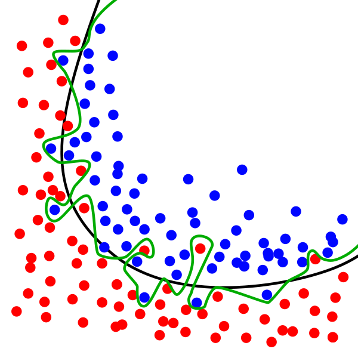
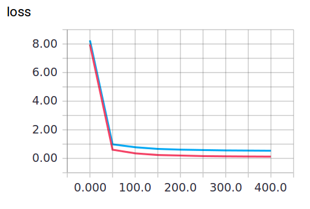
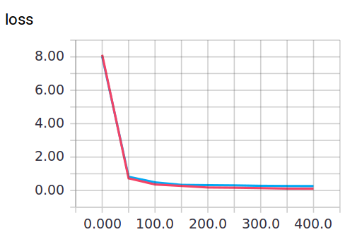

Dropout 解决 overfitting
作者: Mark JingNB 编辑: 莫烦 2016-11-03
学习资料:
要定
Overfitting 也被称为过度学习，过度拟合。 它是机器学习中常见的问题。 举个Classification（分类）的例子。

图中黑色曲线是正常模型，绿色曲线就是overfitting模型。尽管绿色曲线很精确的区分了所有的训练数据，但是并没有描述数据的整体特征，对新测试数据的适应性较差。
举个Regression (回归)的例子，

第三条曲线存在overfitting问题，尽管它经过了所有的训练点，但是不能很好的反应数据的趋势，预测能力严重不足。 TensorFlow提供了强大的dropout方法来解决overfitting问题。
建立 dropout 层
本次内容需要使用一下 sklearn 数据库当中的数据, 没有安装 sklearn
的同学可以参考一下这个教程
安装一下. 然后 import 以下模块.
import tensorflow as tf
from sklearn.datasets import load_digits
from sklearn.cross_validation import train_test_split
from sklearn.preprocessing import LabelBinarizer
keep_prob = tf.placeholder(tf.float32)
...
...
Wx_plus_b = tf.nn.dropout(Wx_plus_b, keep_prob)
这里的keep_prob是保留概率，即我们要保留的结果所占比例，它作为一个placeholder，在run时传入，
当keep_prob=1的时候，相当于100%保留，也就是dropout没有起作用。
下面我们分析一下程序结构，首先准备数据，
digits = load_digits()
X = digits.data
y = digits.target
y = LabelBinarizer().fit_transform(y)
X_train, X_test, y_train, y_test = train_test_split(X, y, test_size=.3)
其中X_train是训练数据, X_test是测试数据。
然后添加隐含层和输出层
# add output layer
l1 = add_layer(xs, 64, 50, 'l1', activation_function=tf.nn.tanh)
prediction = add_layer(l1, 50, 10, 'l2', activation_function=tf.nn.softmax)
loss函数（即最优化目标函数）选用交叉熵函数。交叉熵用来衡量预测值和真实值的相似程度，如果完全相同，交叉熵就等于零。
cross_entropy = tf.reduce_mean(-tf.reduce_sum(ys * tf.log(prediction),
reduction_indices=[1])) # loss
train方法（最优化算法）采用梯度下降法。
train_step = tf.train.GradientDescentOptimizer(0.5).minimize(cross_entropy)
训练
最后开始train，总共训练500次。
sess.run(train_step, feed_dict={xs: X_train, ys: y_train, keep_prob: 0.5})
#sess.run(train_step, feed_dict={xs: X_train, ys: y_train, keep_prob: 1})
可视化结果
训练中keep_prob=1时，就可以暴露出overfitting问题。keep_prob=0.5时，dropout就发挥了作用。
我们可以两种参数分别运行程序，对比一下结果。
当keep_prob=1时，模型对训练数据的适应性优于测试数据，存在overfitting，输出如下：
红线是 train 的误差, 蓝线是 test 的误差.

当keep_prob=0.5时效果好了很多，输出如下：

程序中用到了Tensorboard输出结果，可以参考前面教程:
如果你觉得这篇文章或视频对你的学习很有帮助, 请你也分享它, 让它能再次帮助到更多的需要学习的人. 莫烦没有正式的经济来源, 如果你也想支持 莫烦Python 并看到更好的教学内容, 赞助他一点点, 作为鼓励他继续开源的动力.